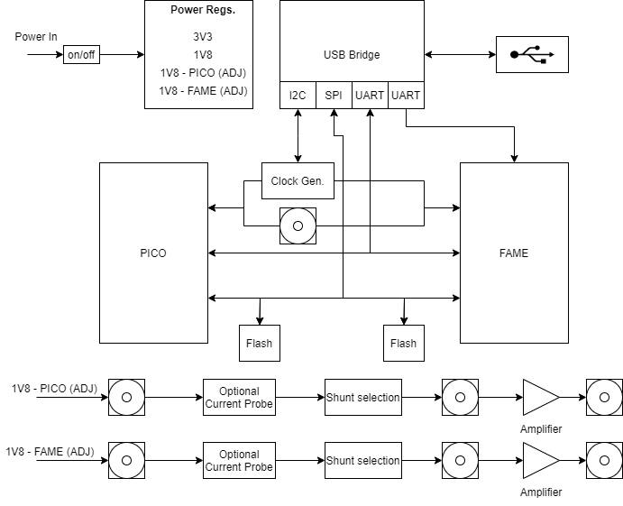
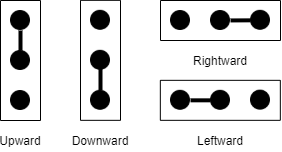

Saidoyoki_v2¶
Overview¶
- Saidoyoki_v2 is an improved version of v1. This board is used to accomodate two in-house designed chips, PicoChip and Famev2, and monitor their cryptographic operations to impelement secure hardware experiments. This manual provides information on Saidoyoki_v2’s capabilities and hardware configurations. To get help for programming, please refer to the repository picochip_pcb_saidoyoki_2 of Secure-Embedded-Systems Github page.
- Getting Started with the Hardware: Saidoyoki_v2 is a highly configurable side-channel test platform. It has two chips with a variety of cryptographic co-proccesors namely, three different versions of AES and ASCON. With these features, The board allows the user to work with both hardware and software implementations of these ciphers. The board is powered with a 5V DC input supply. This supply can be inputted either using a barrel jack or the screw terminal that is connected parallel to it. The board has four different voltage regulators. Each of those regulators have specific targets. Saidoyoki_v2’s another strong feature is its easy connection with a host device. An FTDI FT4232h USB bridge handles all needed communication with the host device. This bridge has four channels that communicates with several devices on the board. The first channel is used for programming the flash memory chips of Fame and Pico, the second one is used to hold the communication with the clock generator chip. The other two ports are used to communicate with the Fame’s and Pico’s user or debug ports. Saidoyoki_v2 provides two ways for power measurement. For each chip, the board has a current probe port with an enable switch and a signal amplifier with several shunt resistor options. The rest of this document explains each of these features individually.
Saidoyoki_v2

Simple block diagram
- Power: Power input for Saidoyoki_v2 board should be a 5V DC and shuold be connecter from either the barrel jack input or from the screw terminal next to it. With the power switch, this input voltage can be delivered to the board or keep it off. Saidoyoki_v2 has four different voltage regulators. Two of those regulators are fixed to 3.3V and 1.8V, these regulators are used to supply general devices on the board. The other two regulators are dedicated to supply core voltages for pico and fame chips. The core supply regulators can either be set to supply 1.8V or to supply an adjustable voltage. This setting can be done using SW2 or SW3. When these swithces are set to FIX they will supply a fixed 1.8V. When they are set to ADJ, the core supply voltage for each chip can be set between 1V and 2V using the adjacent potentiometer using a screw driver.
- Clock Settings: Saidoyoki_v2 has one internal and one external clock source. The external clock source is an SMA connector while the internal clock source is a clock generator chip. The clock signal from one of these sources can be routed to the chips using the header swithces P29 and P30. Among those header switches, the one close to the pico is used to route clock for pico and the other one is used to route clock for fame. Clock source for each chip can be set individually. When the header switch of the pico is set upwards, pico gets its clock from the generator, when it is set downwards, it gets its clock from the SMA connector. Same method applies for fame too. The clock generation chip is Texas Instruments CDCE925PWR and it is capable of generating clock signal up to 200MHz. This chip is connected to the USB bridge with I2C and programmed by it. The chip has an internal EEPROM to store a default setting. This default setting or the current clock settings can be changed by program. To get help for programming, please refer to the repository picochip_pcb_saidoyoki_2 of Secure-Embedded-Systems Github page. P26 is used to supply output voltage for the clock generator, as usual this header must be set downwards. In case of a program disables the I2C lines, these lines can be set as an I2C again temprorarily by shorting this header upwards. P28 is the user input S0 of the chip. This port is internally pulled up and used by pulling down with a jumper. A function for this port can be assigned by the program, if needed. For more detail, please refer to the chip’s datasheet. Following figure shows the headers around the clock generator.
Headers around CDCE925
- Host Device Connection: Saidoyoki_v2 is connected to a host device (usually a linux-based computer) with a microUSB cable. An FTDI FT4232h chip is used to make this possible. This chip has four channels and these ports are used as SPI-flash programming, I2C-Clock Programming, UART-pico/fame user interface, UART-fame debug interface, respectively. When programming a flash chip, the switches of that flash chip should be set to FT and the switches of the other flash chip needs to be set to FLASH. When these switches are set to FT, this means the flash chip is connected to the FT4232h, when they are set to FLASH, this means the flash chip is connected to the chip as a flash memory. Headers P19, P27, P15, P16, P20 and P21 can be used to monitor the serial communications on all four channels of the FT4232h. To get help for programming, please refer to the repository picochip_pcb_saidoyoki_2 of Secure-Embedded-Systems Github page.
- Power Measurement: Saidoyoki_v2 provides two different power measurement methods for each cryptographic chip it has. The first method is current probing. The core supply votage of each chip has a switch that breaks the circuit, routes the current to one port of a screw terminal and the other port of the screw terminal completes the circuit with an incoming current. By this method the power is measured off-the-board. Current probe switch is used to enable or disable this feature. When the switch is set to OFF. The circuit is never broken and the current is delivered to the next device. The other method is a signal amplifier with a shunt resistor. This method is on as a default and it is not effected by the current probe. User can select one of four shunt resistors (0.1 ohm, 1 ohm, 4.7 ohm, 10 ohms or short circuit) and use the signal amplifier (BGA2801) with the SMA connector. Following diagrams illustrates both methods.
Configurable shunt resistors
Current probe terminals
- General jumper settings can be seen as in the following figure.

General switch header shortings
- Saidoyoki_v2 Schematics:
PDF
Headers and Switches¶
Saidoyoki_v2 important headers and switches.
| Symbol | Pins | Function |
|---|---|---|
| P1 | 2 | 5v barrel connector 2.5x5.5mm |
| P2 | 2 | 5v input screw terminal |
| P3 | 2x6 | PICO GPIO pins |
| P4 | 2x9 | PICO SPI pins |
| P5 | 2x6 | PICO RO control interface |
| P6 | 3 | PICO Flash ext access bits d2 d3 |
| P7 | 3 | PICO TRNG and RO ST |
| P8 | NA | NA |
| P9 | 2 | PICO Test Enable |
| P10 | 2x5 | FAME ALARM pins |
| P11 | 2x4 | FAME GPIO pins |
| P12 | 4 | FAME CHECK pins |
| P13 | 2x3 | FAME SCAN and WDOG pins |
| P14 | 2x4 | FAME TRIG pins |
| P15 | 3 | FAME DSU UART rx select |
| P16 | 3 | FAME DSU UART tx select |
| P17 | 3 | FAME flash reset |
| P18 | NA | USB micro b |
| P19 | 2x3 | FTDI SPI external access |
| P20 | 3 | USR UART tx select |
| P21 | 3 | USR UART tx select |
| P22 | 2x5 | FAME shunt resistor select |
| P23 | 2 | FAME current probe screw terminal |
| P24 | 2x5 | PICO shunt resistor select |
| P25 | 2 | PICO current probe screw terminal |
| P26 | 3 | Clock IC output voltage select |
| P27 | 3 | FTDI I2C external access |
| P28 | 2 | Clock IC user pin S0 |
| P29 | 3 | PICO clock select |
| P30 | 3 | PICO clock select |
| P31 | 2 | Reset jumper |
| SW1 | NA | ON/OFF switch |
| SW2 | NA | FAME regulator FIX/ADJ select |
| SW3 | NA | FAME regulator FIX/ADJ select |
| SW4 | NA | PICO flash CK FT/FAME select |
| SW5 | NA | PICO flash CS FT/FAME select |
| SW6 | NA | PICO flash D0 FT/FAME select |
| SW7 | NA | PICO flash D1 FT/FAME select |
| SW8 | NA | FAME flash CK FT/FAME select |
| SW9 | NA | FAME flash CS FT/FAME select |
| SW10 | NA | FAME flash D0 FT/FAME select |
| SW11 | NA | FAME flash D1 FT/FAME select |
| SW12 | NA | FAME current probe select |
| SW13 | NA | PICO current probe select |
| SW14 | NA | NA |
| SW15 | NA | FAME boot select |
SMA Connectors¶
Saidoyoki_v2 SMA Locations
| Symbol | Function |
|---|---|
| J1 | FAME core supply before shunt |
| J2 | FAME core supply after shunt |
| J3 | FAME AMP OUT |
| J4 | PICO core supply before shunt |
| J5 | PICO core supply after shunt |
| J6 | PICO AMP OUT |
| J7 | SMA clock input |